یادگیری با مسیر روشن
درس، منابع، تمرین و مرور پیشرفت شخصی
 AeroHubAeroHubمعرفی قابلیتهای AeroHub / معرفی تصویری / آبان ۱۴۰۵
AeroHubAeroHubمعرفی قابلیتهای AeroHub / معرفی تصویری / آبان ۱۴۰۵از اولین درس تا پیگیری آموزش؛ منابع، تمرین و کارهای آموزشگاه را در یک فضای منسجم دنبال کنید.
درس، منابع، تمرین و مرور پیشرفت شخصی
سرفصل، آزمون و پیگیری نتیجهٔ آموزش
برنامهٔ جلسات، مدارک، شهریه و گزارشها
AeroHubنقشهٔ راهنما / معرفی تصویری / آبان ۱۴۰۵نخستین نسخهٔ قابل ارائه برای هنرجو، مدرس و آموزشگاه؛ منابع، سؤالها، دورهها و ابزارها مجموعهٔ آغازیناند و بهتدریج گسترش مییابند.
از حساب شخصی تا همکاری در آموزشگاه؛ هر نقش، مسیر خودش را دارد.
درس، تمرین و پیشرفت شخصی در یک مسیر پیوسته؛ بدون ساخت سابقهٔ رسمی پرواز.
کتابخانهٔ موضوعی، PDFخوان و ابزارهای شخصی مطالعه؛ کنار پروندههای ایمنی.
ابزارهای تعاملی و بستههای مربی، برای درک بهتر؛ با مرز روشن کاربرد آموزشی.
آمادهسازی دوره، ثبتنام و آزمون؛ مسیر آموزش برای مدرس و هنرجو روشن میماند.
پوشش سرفصل، آمادگی بانک و تحلیل پاسخها؛ ابزار تصمیم برای مدرس و بازبین.
جلسه، منابع، مدارک و نتیجهٔ آموزش در ارتباط با یکدیگر؛ کنترل نرمافزاری از مجوز پرواز جداست.
شهریه، صورتحساب، اقساط و گردش حساب؛ هزینه و ماندهٔ آموزش قابل پیگیریاند.
خواندن و انجام کارهای روزمره در فضایی متناسب با اندازهٔ صفحه.
AeroHubورود و دسترسی / معرفی تصویری / آبان ۱۴۰۵مطالعهٔ مستقل از ثبتنام آموزشگاه جداست. کاربر در پایلوت با دو ورودی حساب میسازد و مستقیماً وارد فضای یادگیری میشود؛ برای شروع، دعوت یا پرداخت لازم نیست.
 AeroHubورود و دسترسی / معرفی تصویری / آبان ۱۴۰۵
AeroHubورود و دسترسی / معرفی تصویری / آبان ۱۴۰۵هنرجو، مدرس و مدیر به فضای متناسب با نقش خود میرسند. مسئولیتهای اداری مانند دفتر آموزش، سرمربی و دیسپچ نیز دامنهٔ کار مشخص دارند؛ مدیر وظایف همکاران را در آموزشگاه تعیین میکند تا هر فرد کار مجاز خود را پیگیری کند.
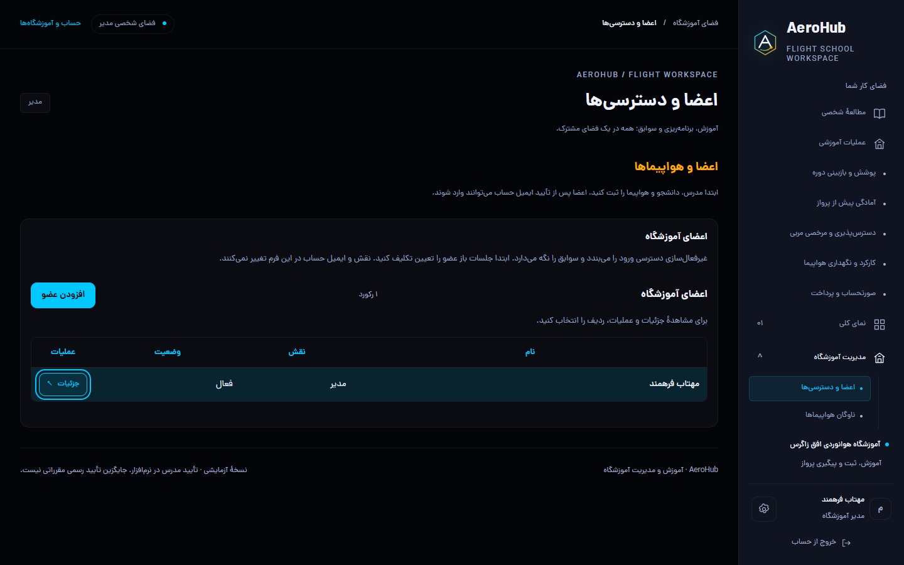
AeroHubیادگیری مستقل / معرفی تصویری / آبان ۱۴۰۵پنج مسیر خلبانی با ۱۸۲ درس و ۳۴ مسیر نظری غیرخلبانی با ۸۴ درس مستقل آمادهاند. کاربر مسیر مرتبط با هدف خود را انتخاب میکند و به درسها و منابع همان موضوع میرسد.
 AeroHubیادگیری مستقل / معرفی تصویری / آبان ۱۴۰۵
AeroHubیادگیری مستقل / معرفی تصویری / آبان ۱۴۰۵درس، نقطهٔ اتصال هدف یادگیری به متن و تمرین است. بهجای جستوجوی پراکنده میان فایلها، هنرجو توضیح درس و منابع مرتبط را از همان صفحه دنبال میکند.
 AeroHubیادگیری مستقل / معرفی تصویری / آبان ۱۴۰۵
AeroHubیادگیری مستقل / معرفی تصویری / آبان ۱۴۰۵کاربر دامنهٔ مطالعه را انتخاب میکند، پاسخ میدهد و پس از نهاییکردن، نتیجه در حساب شخصی ذخیره میشود. مرور پاسخهای نادرست به مطالعهٔ بعدی جهت میدهد تا روی ضعفهای خودش تمرکز کند و تمرین را ادامه دهد.
 AeroHubیادگیری مستقل / معرفی تصویری / آبان ۱۴۰۵
AeroHubیادگیری مستقل / معرفی تصویری / آبان ۱۴۰۵مطالعه و تمرین مستقل در حساب شخصی نگهداری میشوند. در آموزشگاه، پیشرفت رسمی به ثبتنام و تأیید هدفهای جلسه توسط مدرس وابسته است؛ این دو مسیر با هم اشتباه نمیشوند.
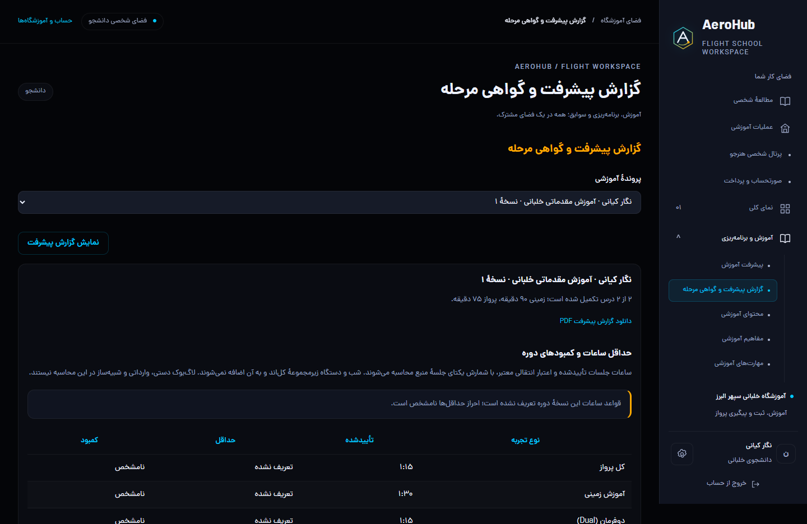
AeroHubیادگیری مستقل / معرفی تصویری / آبان ۱۴۰۵اهداف EASA در ۱۶ حوزه در دسترساند و میتوان آنها را جستوجو کرد و به درس یا سؤال پیوند داد. مدرس میتواند بررسی کند کدام سرفصلها در آموزش و تمرین پوشش داده شدهاند.
 AeroHubکتابخانه و مطالعه / معرفی تصویری / آبان ۱۴۰۵
AeroHubکتابخانه و مطالعه / معرفی تصویری / آبان ۱۴۰۵منابع آموزشی با معرفی و پیوند مطالعه در کتابخانه جمع شدهاند. کاربر موضوع را جستوجو میکند و پیش از بازکردن فایل، مشخصات و نوع دسترسی منبع را میبیند.
 AeroHubکتابخانه و مطالعه / معرفی تصویری / آبان ۱۴۰۵
AeroHubکتابخانه و مطالعه / معرفی تصویری / آبان ۱۴۰۵منبع در PDFخوان داخلی باز میشود؛ کتاب و گزارش ایمنی تجربهٔ مطالعهٔ مشترک دارند. کاربر میان صفحات حرکت میکند، نشانک و یادداشت و هایلایت شخصی میسازد و به محل مطالعه برمیگردد. این اطلاعات به حساب او متصلاند و متن منتشرشدهٔ منبع را تغییر نمیدهند.
 AeroHubکتابخانه و مطالعه / معرفی تصویری / آبان ۱۴۰۵
AeroHubکتابخانه و مطالعه / معرفی تصویری / آبان ۱۴۰۵کاربر منابع قابلدسترسی را برای مطالعهٔ آفلاین انتخاب میکند. کتاب و واژهنامهٔ انتخابشده میتوانند در همان دستگاه در دسترس بمانند و وضعیت ذخیرهسازی قابل مشاهده است.
 AeroHubکتابخانه و مطالعه / معرفی تصویری / آبان ۱۴۰۵
AeroHubکتابخانه و مطالعه / معرفی تصویری / آبان ۱۴۰۵واژهنامهٔ هوانوردی، معنای اصطلاح را همراه توضیح و منبع در اختیار کاربر میگذارد. پیوند میان مفهوم، مطالعه و درس کمک میکند واژه در زمینهٔ آموزشی خودش فهمیده شود.
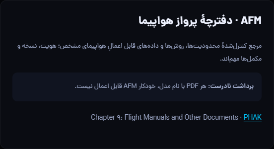
AeroHubکتابخانه و مطالعه / معرفی تصویری / آبان ۱۴۰۵پروندههای ایمنی و گزارشهای تحقیق در یک فضای موضوعی جمع شدهاند. کاربر معرفی پرونده، منبع گزارش و مطالعهٔ PDF را دنبال میکند و یادداشت شخصی خودش را نگه میدارد.
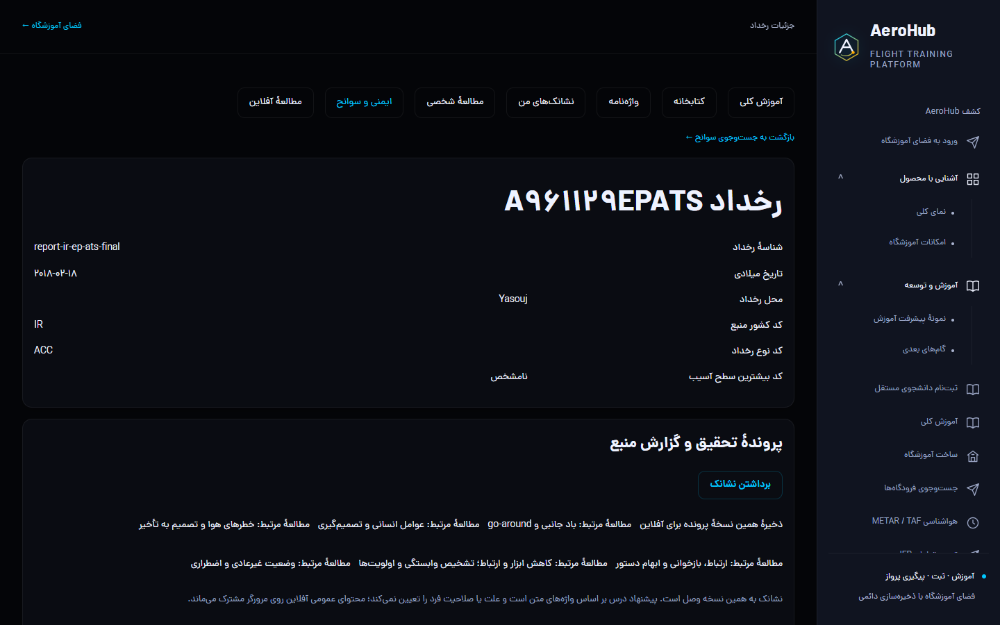
AeroHubتمرینهای کاربردی / معرفی تصویری / آبان ۱۴۰۵سناریوی آموزشی IFR، ابزار، کنترلها و طرح مسیر را برای فهم مفهوم کنار هم میگذارد. کاربر پس از تمرین، بازخورد و تلاشهای اخیر را مرور میکند. ذخیرهٔ نتیجه اختیاری است و اشتراک با مربی به رضایت و دسترسی مجاز وابسته میماند.
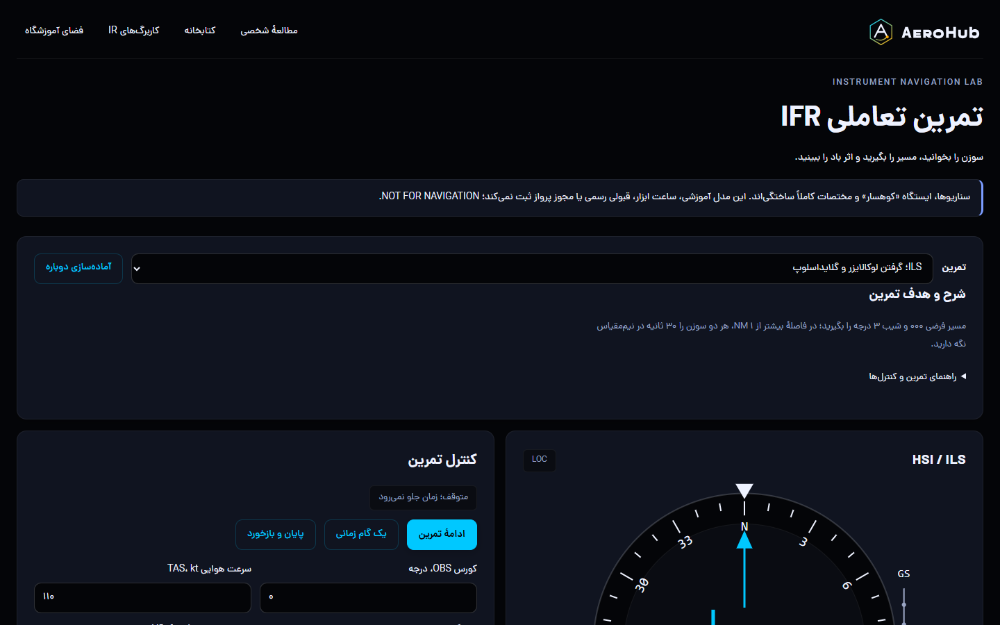
AeroHubتمرینهای کاربردی / معرفی تصویری / آبان ۱۴۰۵کاربرگها و بستههای آموزشی پنج مسیر خلبانی، مفهوم، فعالیت کلاس و وابستگیهای موردنیاز را کنار هم میگذارند. طرحها و نمودارها صریحاً آموزشیاند و منبع واقعی باید جدا انتخاب شود.
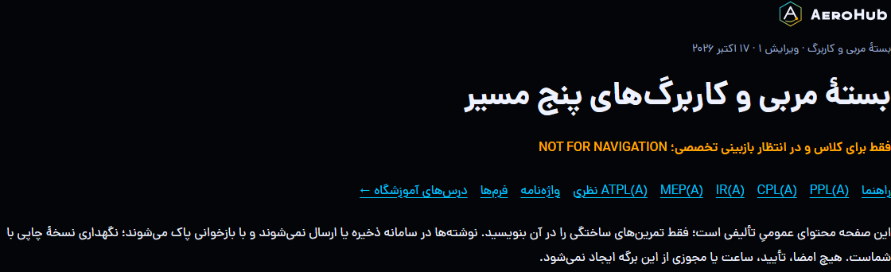
AeroHubتمرینهای کاربردی / معرفی تصویری / آبان ۱۴۰۵صفحهٔ بریفینگ، اطلاعات و خطرهای جوی را برای مرور کنار هم میآورد. زمان، منبع و وضعیت دریافت داده باید در تفسیر اطلاعات دیده شوند و به تصمیمگیری آموزشی زمینه بدهند.
 AeroHubمدیریت آموزش / معرفی تصویری / آبان ۱۴۰۵
AeroHubمدیریت آموزش / معرفی تصویری / آبان ۱۴۰۵فضای آموزشگاه نقطهٔ شروع کارهای روزمره است؛ مدیر به بخشهای آموزشی میرسد و هنرجو برنامه، دوره و پیشرفت مجاز خودش را دنبال میکند. محتوای هر نما تابع نقش و عضویت است.
 AeroHubمدیریت آموزش / معرفی تصویری / آبان ۱۴۰۵
AeroHubمدیریت آموزش / معرفی تصویری / آبان ۱۴۰۵مدیر و مدرس درسها و هدفهای یادگیری دوره را آماده و پس از بررسی منتشر میکنند. هنرجو به برنامهٔ مشخص دوره دسترسی دارد و مدرس میتواند مسیر آموزش را بر اساس همان سرفصل دنبال کند.
 AeroHubمدیریت آموزش / معرفی تصویری / آبان ۱۴۰۵
AeroHubمدیریت آموزش / معرفی تصویری / آبان ۱۴۰۵هنرجو در دورهٔ منتشرشده ثبتنام میشود و به محتوای همان دوره میرسد. مدیر میتواند ثبتنام و انتقال را پیگیری کند و هنرجو مسیر آموزشی مشخصی برای ادامهٔ یادگیری داشته باشد.
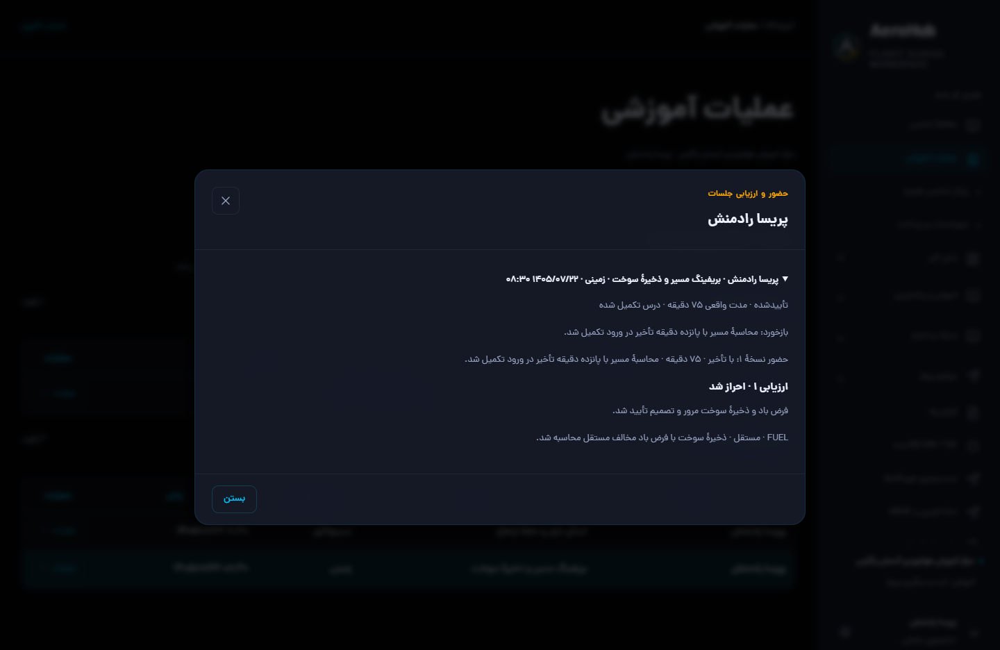
AeroHubمدیریت آموزش / معرفی تصویری / آبان ۱۴۰۵مدرس صورت سؤال، گزینهها، پاسخ درست، توضیح و منبع را در یک بانک مرتبط با دوره مدیریت میکند. بازبین میتواند سؤالها را بررسی کند تا انتخاب آنها برای تمرین و آزمون هدفمندتر باشد.
 AeroHubمدیریت آموزش / معرفی تصویری / آبان ۱۴۰۵
AeroHubمدیریت آموزش / معرفی تصویری / آبان ۱۴۰۵هنرجو آزمون منتشرشدهٔ مجاز را شروع یا ادامه میدهد، پاسخها را ثبت میکند و پس از ارسال نتیجه را میبیند. زمان و مجوز نمایش پاسخ با وضعیت تلاش کنترل میشوند.
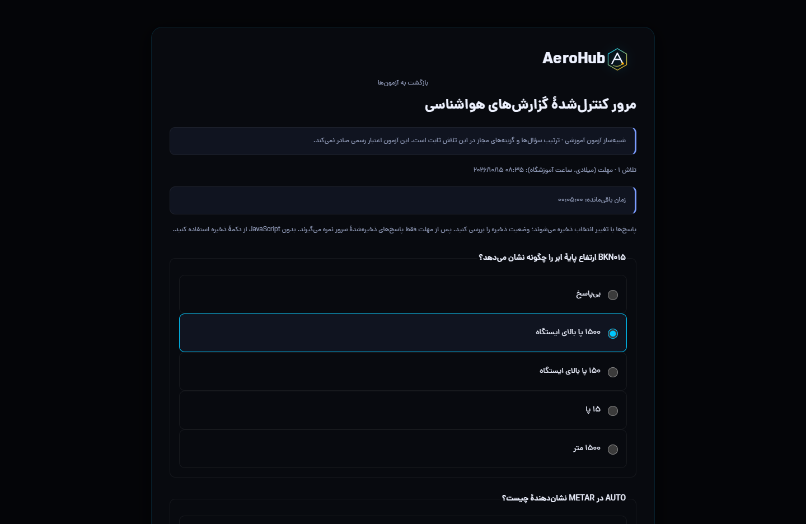
AeroHubسنجش و بازبینی / معرفی تصویری / آبان ۱۴۰۵نقشهٔ آزمون، توزیع سؤال را به بخشهای دوره متصل میکند. بازبین پوشش سرفصل، سؤالهای قابل انتخاب و شکاف ذخیره را کنار هم میبیند تا کمبودها پیش از ساخت آزمون مشخص شوند و طرح با موجودی بانک مقایسه شود.
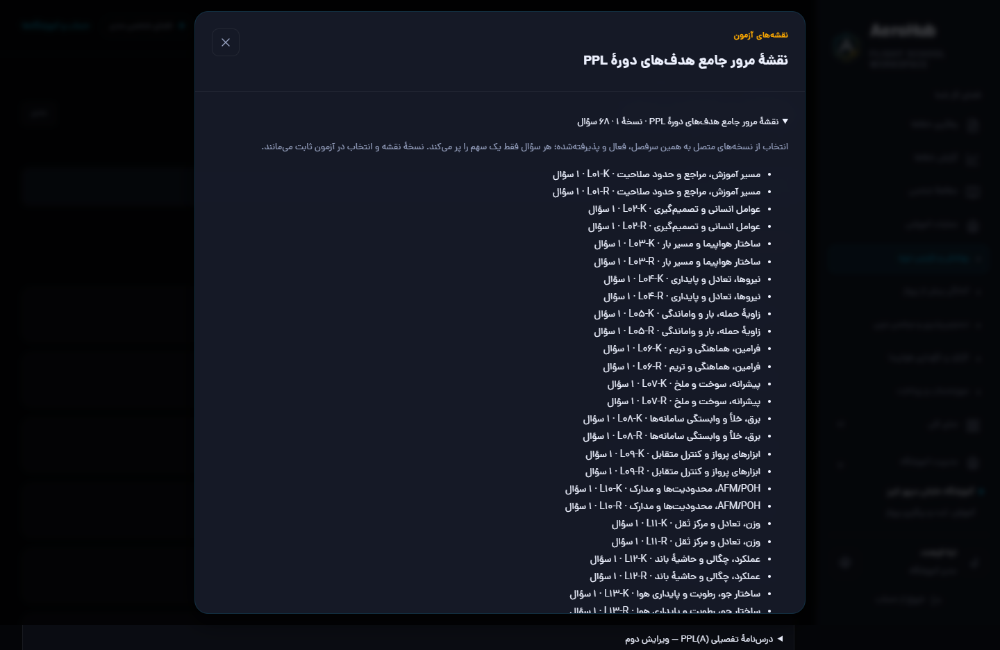
AeroHubسنجش و بازبینی / معرفی تصویری / آبان ۱۴۰۵نمای تحلیل، نتیجه و شاخصهای سؤال را برای بررسی آموزشی در کنار هم میگذارد. مدرس میتواند از نتیجهٔ کلی به جزئیات برسد و بازبینی بعدی را بر اساس شاهد برنامهریزی کند.
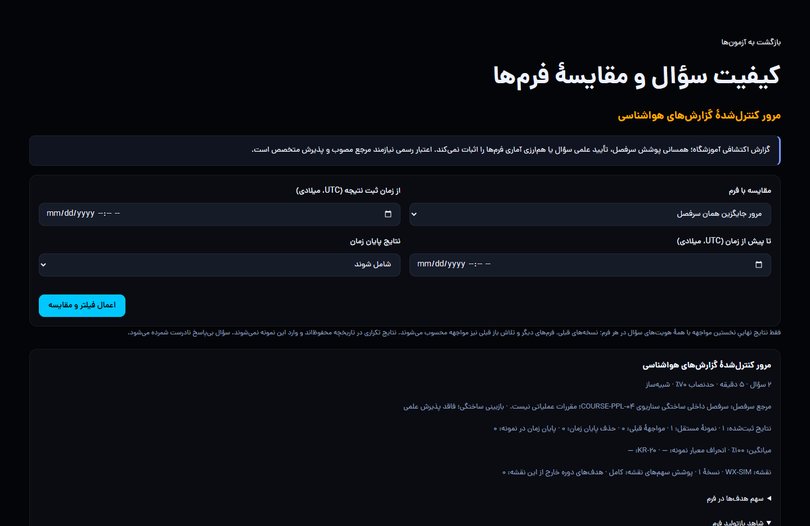
AeroHubسنجش و بازبینی / معرفی تصویری / آبان ۱۴۰۵هنرجو سناریوی آموزشی را میخواند و انتخاب و دلیل تصمیم خود را ثبت میکند. مربی با معیار مشخص ارزیابی میکند و بازخورد میدهد تا هنرجو بتواند شیوهٔ تصمیمگیری خودش را مرور کند.
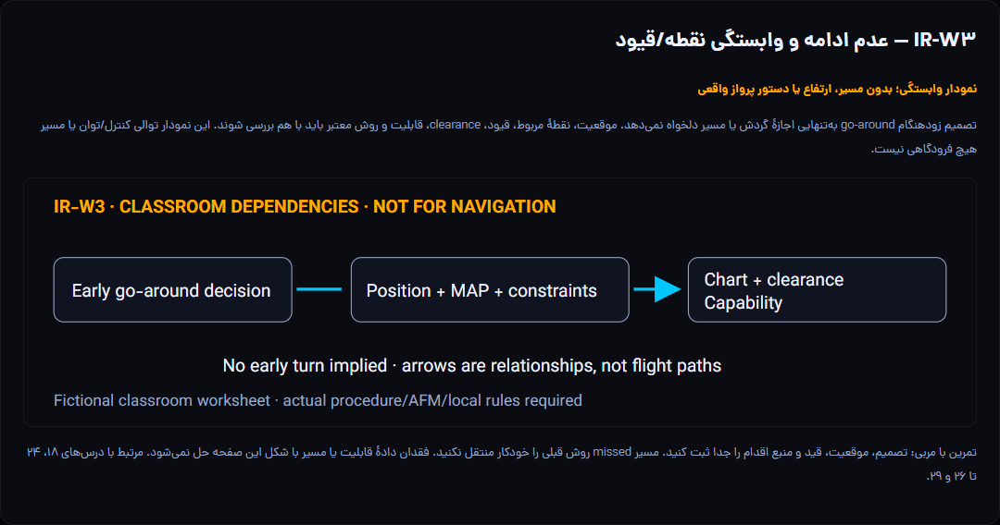
AeroHubعملیات آموزشگاه / معرفی تصویری / آبان ۱۴۰۵جلسه به هنرجو، درس، مربی و برای پرواز به هواپیما متصل است. رزرو و جابهجایی، زمان و تداخل منابع را کنترل میکنند. مربی پیش از جلسه، وضعیت مدارک و منابع و برنامه را بررسی میکند و هشدارها و موانع را برای رسیدگی میبیند.
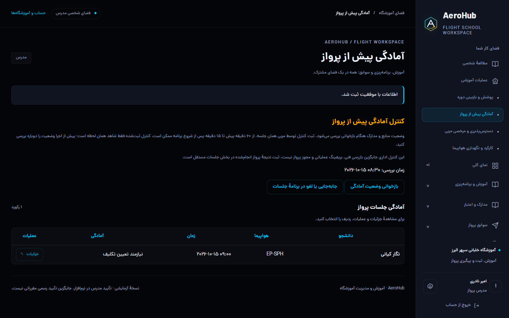
AeroHubعملیات آموزشگاه / معرفی تصویری / آبان ۱۴۰۵درس زمینی، مربی، اتاق و چند هنرجوی یک دوره در یک کلاس جمع میشوند. حضور هر هنرجو جدا ثبت میشود و زمان آموزش با همان جلسه و نتیجه ارتباط دارد.
 AeroHubعملیات آموزشگاه / معرفی تصویری / آبان ۱۴۰۵
AeroHubعملیات آموزشگاه / معرفی تصویری / آبان ۱۴۰۵دستگاه آموزشی با مدل، محل و وضعیت سرویس تعریف میشود. رزرو، همزمانی دستگاه، مربی و هنرجو و اعتبار موردنیاز را بررسی میکند؛ جلسهٔ سیمولاتور هواپیما نمیخواهد.
 AeroHubعملیات آموزشگاه / معرفی تصویری / آبان ۱۴۰۵
AeroHubعملیات آموزشگاه / معرفی تصویری / آبان ۱۴۰۵مربی بازههای حضور و عدم حضور و درخواست مرخصی را ثبت میکند. مدیر پیش از تأیید مرخصی، جلسات بازِ متداخل را میبیند و باید آنها را جابهجا یا لغو کند.
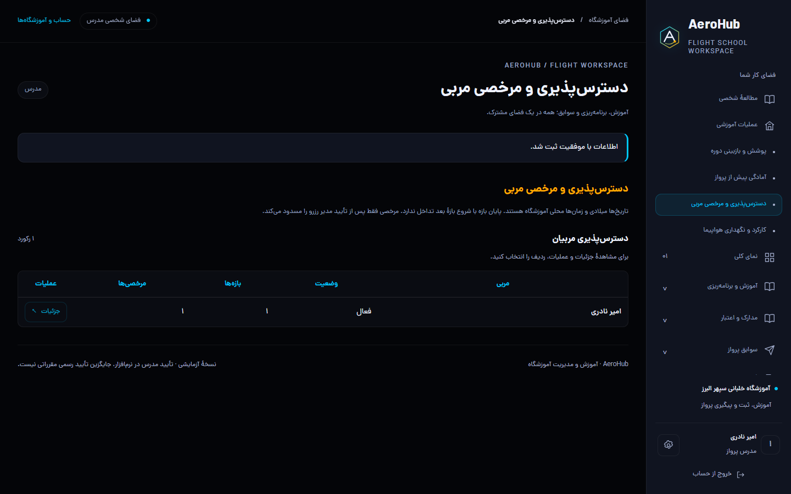
AeroHubعملیات آموزشگاه / معرفی تصویری / آبان ۱۴۰۵کارکرد، AOG و سررسید بازدید در برنامهریزی منابع دیده میشوند. رزرو و کنترل پیش از پرواز قواعد متفاوت خود را دارند تا هشدار و مانع با معنای روشن نمایش داده شوند.
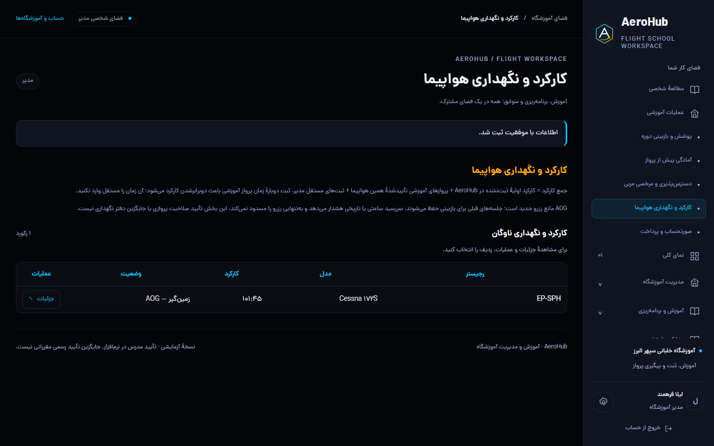
AeroHubعملیات آموزشگاه / معرفی تصویری / آبان ۱۴۰۵مدارک هنرجو، مربی و هواپیما با وضعیت بررسی و تاریخ اعتبار نگهداری میشوند. آموزشگاه شرایط لازم را مشخص میکند تا اعتبار مدارک تا پایان جلسه بررسی و موارد ناقص یا منقضی دیده شوند.
 AeroHubعملیات آموزشگاه / معرفی تصویری / آبان ۱۴۰۵
AeroHubعملیات آموزشگاه / معرفی تصویری / آبان ۱۴۰۵هنرجو سوابق مجاز خودش را مرور میکند و نتیجهٔ آموزش از مسیر مدرس ثبت میشود. ساعتها و نتیجههای ثبتشده برای پیگیری مسیر آموزش در دسترساند و در صورت نیاز میتوان آنها را با ذکر دلیل اصلاح کرد.
 AeroHubمالی و گزارش / معرفی تصویری / آبان ۱۴۰۵
AeroHubمالی و گزارش / معرفی تصویری / آبان ۱۴۰۵مدیر بر مبنای نرخ توافقشده و جلسات آموزشی، صورتحساب صادر میکند. زمان، نرخ و جلسه در سند مشخصاند؛ برنامهٔ اقساط و دریافتها به همان صورتحساب وصلاند و مانده از گردش سند به دست میآید تا هزینه و وضعیت بدهی روشن بمانند.
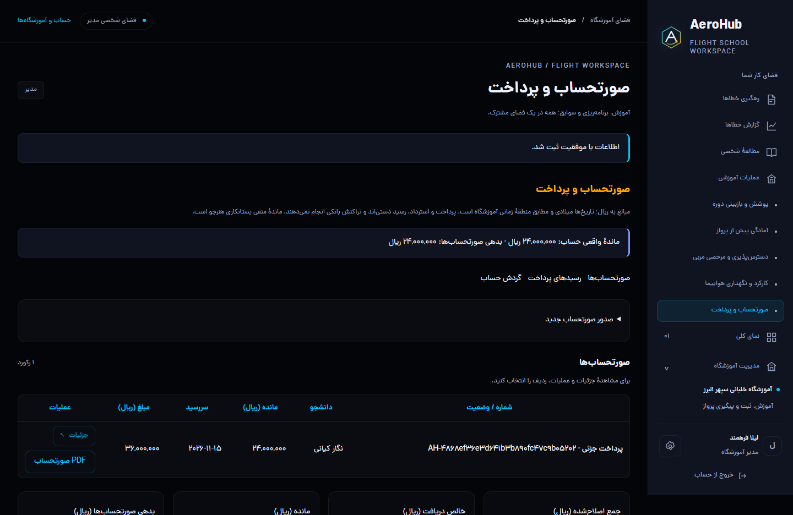
AeroHubمالی و گزارش / معرفی تصویری / آبان ۱۴۰۵اصلاح یا ابطال صورتحساب و استرداد با دلیل، به سند و رسید مبنا متصل میمانند. گردش حساب در بازهٔ انتخابی، ماندهٔ ابتدا، بدهکار و بستانکار و ماندهٔ انتها را نشان میدهد؛ PDF صورتحساب و گردش برای مرور و اشتراک در دسترس است.
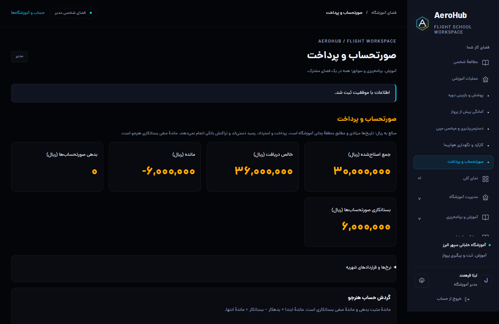
AeroHubمالی و گزارش / معرفی تصویری / آبان ۱۴۰۵پرتال شخصی، دسترسی هنرجو به صورتحساب و وضعیت پرداخت خودش را فراهم میکند. دسترسی مالی مدیر و هنرجو از هم جداست و مربی با نقش آموزشی به امور مالی دسترسی نمیگیرد.
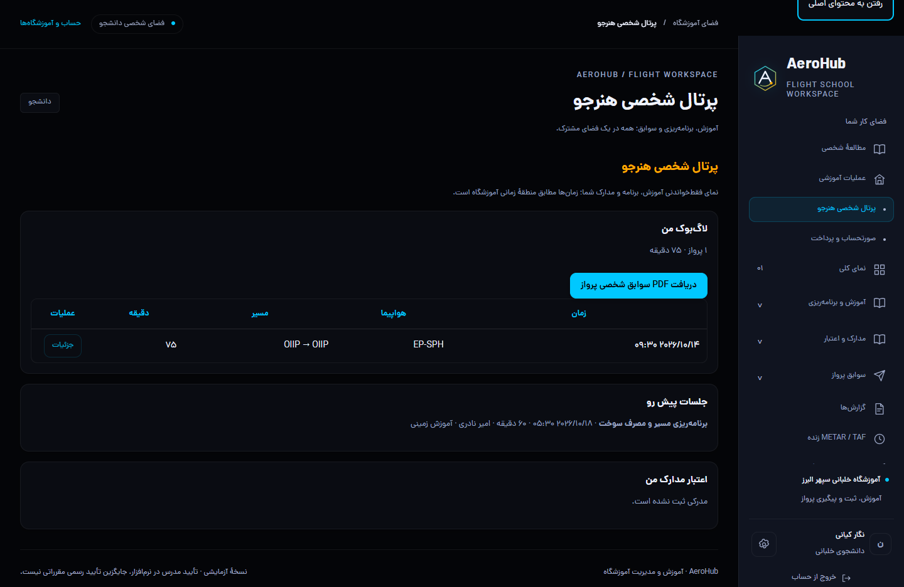
AeroHubتجربهٔ کاربری / معرفی تصویری / آبان ۱۴۰۵متن خوانا و چیدمان متناسب با اندازهٔ صفحه، دنبالکردن درسها و کارهای آموزشگاه را سادهتر میکنند. ظاهر تیره با هویت هوانوردی در بخشهای مختلف یکپارچه است.
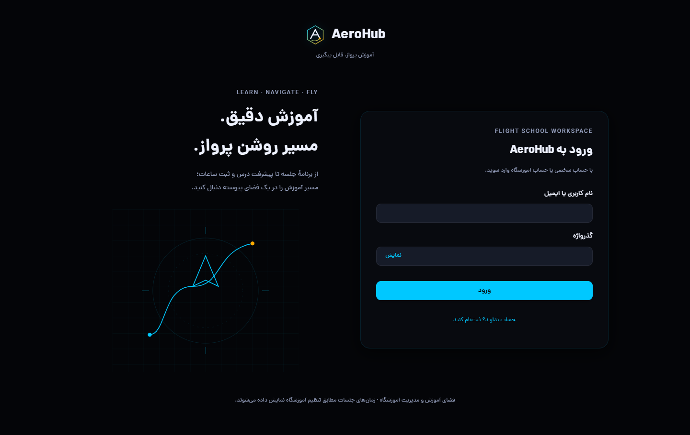
AeroHubوضعیت واقعی / معرفی تصویری / آبان ۱۴۰۵پیادهسازی نرمافزار، بازبینی علمی و پذیرش عملیاتی سه نتیجهٔ جدا هستند.
حساب مستقل، درس و تمرین، کتابخانه، IFR، سوابق آموزشگاه، سنجش، عملیات و مالی پیادهاند. تصاویر این معرفی، ثبت محلی رابط با سناریوهای ساختگیاند.
بازبینی کامل سؤالها، تطبیق ایران و هواپیمای منتخب و کالیبراسیون باقی است. گزارش اختلاف IR آماده شده؛ پیشنهادهای اصلاحی به معنی انتشار نسخهٔ اصلاحشده نیستند.
چارت، AIRAC، NOTAM، پیامرسان و دستگاه مشتری پذیرش جدا میخواهند. بله و دومرحلهای در پایلوت متوقفاند؛ پرداخت شبیهسازیشده است. ظرفیت عملیاتی تضمین نشده است.
AeroHubدانش بیشتر، زبانهای بیشتر، تجربهای عمیقتر. / معرفی تصویری / آبان ۱۴۰۵نسخهٔ نخست، آغاز مسیر AeroHub است. در برنامهٔ توسعه، گسترش منابع و تعمیق امکانات موجود در کنار قابلیتهای تازه قرار دارد.
افزودن جزوات و فیلمهای آموزشی اساتید ایرانی و خارجی، با هماهنگی صاحبان اثر و مجوز استفاده، در برنامهٔ نسخههای بعد قرار دارد.
گسترش زبانهای رابط و محتوای آموزشی، برای همراهی با مخاطبان بیشتر و منابع متنوعتر، در نقشهٔ راه محصول پیشبینی شده است.
افزایش پوشش بانک سؤال، دورهها و منابع، تعمیق ابزارهای یادگیری و مدیریت و افزودن قابلیتهای تازه با بازخورد کاربران دنبال خواهد شد.
این موارد چشمانداز توسعهاند؛ بهعنوان امکانات موجود این نسخه یا موعد قطعی انتشار معرفی نمیشوند.
AeroHubچرا AeroHub را در فهرست انتخاب بگذاریم؟ / معرفی تصویری / آبان ۱۴۰۵AeroHub، یادگیری و مدیریت آموزش را در یک بستر کنار هم قرار میدهد. این فهرست، نقاط قوت نسخهٔ معرفیشده و معیارهای مقایسه با گزینههای داخلی و خارجی را نشان میدهد.
از منبع و درس تا تمرین و مرور عملکرد، فعالیتهای یادگیری در یک مسیر قرار میگیرند و به حساب شخصی متصل میمانند.
درس، بانک سؤال، مرور پاسخ، کتابخانه و تمرین IFR در کنار سرفصل، برنامهٔ جلسات، سوابق و مالی قرار دارند؛ ترکیبی فراتر از معرفی یک ابزار منفرد آزمون یا رزرو.
PDFخوان، نشانک، یادداشت و هایلایت خصوصی و ذخیرهٔ آفلاین منابع منتخب، مسیر مرور و ادامهٔ مطالعه را به حساب شخصی متصل میکنند.
مسیرهای خلبانی و حوزههای دیگر هوانوردی در یک ساختار آموزشی معرفی شدهاند؛ گسترش پوشش و عمق محتوای آنها بخشی از مسیر توسعه است.
AeroHubمزیتهای AeroHub؛ ادامه / معرفی تصویری / آبان ۱۴۰۵ادامهٔ معیارهای انتخاب و منابع مقایسهٔ محصول.
برای اعلان و گردشهای ارتباطی، زیرساخت سرویس داخلی بله در محصول پیاده شده است. در پایلوت فعلی، ارسال بله و ورود دومرحلهای موقتاً غیرفعالاند؛ ارسال پیامک واقعی از این معرفی نتیجه نمیشود.
دریافت بازخورد و گفتوگو دربارهٔ نیاز آموزشگاه، اولویت توسعه و پشتیبانی از راههای تماس همین گزارش امکانپذیر است.
مقایسه باید بر اساس نسخه و نیاز واقعی انجام شود. برای نمونه، FlightLogger و Flight Schedule Pro نیز مدیریت یکپارچهٔ آموزشگاه را عرضه میکنند؛ بنابراین یکپارچگی بهتنهایی مزیت انحصاری AeroHub نیست. دربارهٔ بازار داخلی، ادعای «تنها محصول» مطرح نمیشود.
AeroHubنسخهٔ دمو را خودتان تجربه کنید / معرفی تصویری / آبان ۱۴۰۵این نشانی برای آشنایی و آزمایش نسخهٔ نمایشی AeroHub است. دمو دادهٔ آمادهٔ کاربری و آموزشگاهی برای سناریوی تست شما ندارد؛ اطلاعات موردنیاز را خودتان وارد کنید و مسیرهای محصول را بررسی کنید.
ورود به دمو ↗ aerohub-pilot.onrender.comبرای دریافت دسترسی آزمایشی با توسعهدهنده تماس بگیرید. برای آزمایش، اطلاعات ساختگی وارد کنید و پیام یا پرداخت واقعی انجام ندهید. ارتباط در تلگرام.
AeroHubارتباط با توسعهدهنده / معرفی تصویری / آبان ۱۴۰۵
توسعهدهندهٔ نرمافزار AeroHub
ایتا و بله: با شمارهٔ ۰۹۹۱۸۷۹۰۹۶۹ در دسترس هستم.
این نسخه، آغاز مسیر توسعهٔ محصول است و با تجربهٔ کاربران رشد میکند. اگر هنگام استفاده با خطا روبهرو شدید یا پیشنهاد و نقدی داشتید، مشتاق شنیدن تجربهٔ شما هستم؛ بازخوردتان به بهبود و اولویتبندی نسخههای بعد کمک میکند.
AeroHubایده، دقت، ساخت / معرفی تصویری / آبان ۱۴۰۵طراحیشده برای آموزش هوانوردیبرای یادگیری عمیقتر،
و مسیر آموزشی که بتوان آن را دنبال کرد.
AeroHub / آموزش دقیق. مسیر روشن پرواز.
AeroHubپشتیبانی و شفافیت / معرفی تصویری / آبان ۱۴۰۵راههای رسیدگی به مسئله و بررسی سوابق آموزشی و مالی، همراه استفادهٔ روزمرهاند.
روشهای تماس توسعهدهنده برای گزارش مسئله، پیشنهاد و هماهنگی نیاز آموزشگاه در همین معرفی درج شدهاند. شیوه و زمان خدمات پشتیبانی با توافق استفاده تعیین میشوند.
شناسهٔ درخواست و گزارش رخدادها به پیدا کردن علت مسئله کمک میکنند. نام صفحه، زمان و گامهای تکرار مشکل را برای پشتیبانی بفرستید؛ گزارش عمومی نباید حاوی اطلاعات خصوصی هنرجو باشد.
نرخ توافقشده، جلسه، صورتحساب، اقساط و دریافت به هم مرتبطاند. هنرجو مالی خودش را میبیند و مسئول مجاز میتواند اصلاح مستند و اثر آن بر مانده را دنبال کند؛ پرداخت پایلوت شبیهسازیشده است.
نتیجهٔ جلسه، لاگبوک و اصلاح با دلیل به سابقهٔ مربوط متصل میمانند. مطالعه و تمرین شخصی از سابقهٔ رسمی آموزشگاه تفکیک میشوند تا معنای هر نتیجه روشن باشد.
AeroHubپشتیبانی و شفافیت / معرفی تصویری / آبان ۱۴۰۵راههای رسیدگی به مسئله و بررسی سوابق آموزشی و مالی، همراه استفادهٔ روزمرهاند.
هنرجو، مدرس و مدیر دسترسی متناسب با مسئولیت دارند. سوابق مالی و آموزشی و یادداشتهای خصوصی تابع مالکیت و مجوزند؛ آموزشگاهها فضای دادهٔ مستقل دارند.
در شروع استفاده، دورهها، نقشها، برنامهٔ منابع و خدمات ارتباطی متناسب با آموزشگاه مرور میشوند. بازبینی علمی محتوا و پذیرش محیط واقعی، همراه توسعهٔ مرحلهای دنبال میشوند.